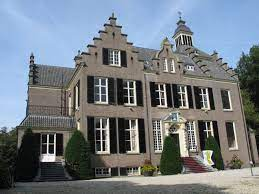
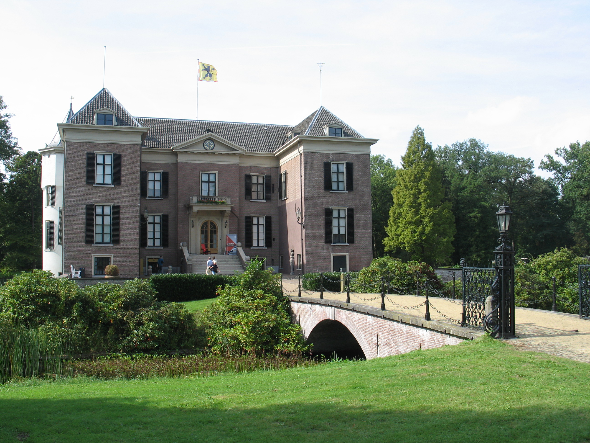

 De grond waarop het Maarten Maartenshuis is gebouwd, werd door de schrijver J.M.W. van der Poorten Schwartz gekocht in 1884. In 1901 werd begonnen met de bouw van het landhuis, dat in juni 1903 door de familie Schwartz werd betrokken. In 1902 was men ook begonnen met het bouwen van het Koetshuis. Hier woonde het personeel en werden de rijtuigen en de automobiel gestald. Van der Poorten Schwartz had tussen 1890 en 1915 veel succes met zijn romans in Engeland, Duitsland en Amerika. Hij vond echter zijn achternaam niet geschikt als schrijversnaam en koos daarom voor het pseudoniem Maarten Maartens. Dochter Ada erfde na de dood van haar vader in 1915 en moeder Anna in 1924 het huis. Zij bleef ongetrouwd. Om de nagedachtenis van haar vader te eren werd het huis omgedoopt tot het Maarten Maartenshuis. Ada van der Poorten Schwartz overleed in 1944. Een bijzondere gebeurtenis is de herbouw van het Openluchttheater in 2017. Ooit laten bouwen in 1937 door Ada, samen met haar vriendin Henriëtte Roland Holst. Het ‘Kasteel’, het Koetshuis en het Openluchttheater zijn ook op de open monumenten dagen in september te bezoeken.
 In het midden van de veertiende eeuw laat Heinrich van Mierlaer, proost van de Utrechtse dom, een versterkt kasteel bouwen ter vervanging van een oorspronkelijke hof, die in 1322 was platgebrand door graaf Willem III van Holland. In het begin van de zeventiende eeuw, na de dood van domproost Hennin de Bossu, staat het Huis enige tijd leeg en raakt in verval. In 1635 verkoopt het domkapittel Huis Doorn aan kanunnik jonkheer Reynier van Golsteyn, die het laat restaureren voor een bedrag van 5.517 guldens, 6 stuivers en 8 penningen. Een tekening van Jan de Beijer uit 1750 doet vermoeden, dat domproost Frederik Willem van Diest die in 1701 eigenaar wordt, het kasteel weer heeft laten verbouwen. Aan de oostzijde is onder andere de muur van de binnenplaats verlaagd en van de torens is de zuidwestelijke verhoogd en de noordwestelijke gesloopt.